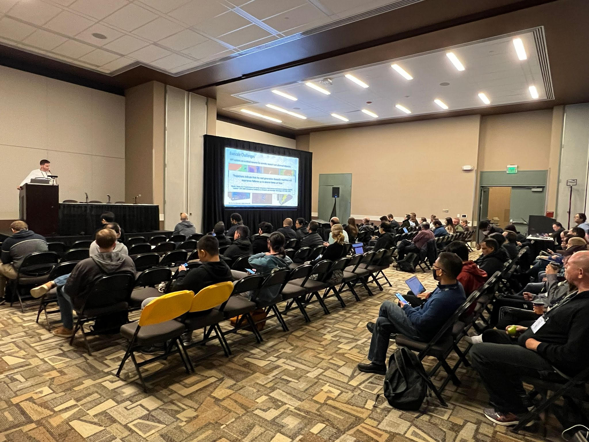
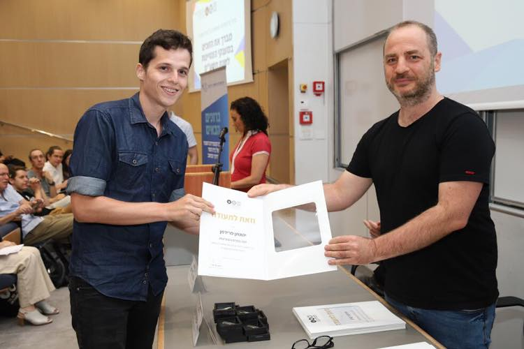

About
I am a Researcher and Algorithms Developer at the Israel Atomic Energy Commission (since 2019), as well as a Ph.D. student in the Computer Science Department at Ben-Gurion University. My primary interests lie in the fields of High-Performance Computing, Parallel Computing, Algorithms, Artificial Intelligence, Computer Vision, and Image Processing. Running is my favorite exercise!
Education
Ph.D. student in Computer Science, Ben-Gurion University, (2022-now)
Thesis:
Recoverable Algorithms in HPC SystemsSupervisors:
Prof. Danny Hendler, Prof. Hagit Attiya, Dr. Gal OrenM.Sc. in Computer Science, Ben-Gurion University, (2019-2022)
Thesis:
Recoverable Algorithms in HPC Systems Using NVRAM TechnologySupervisors:
Prof. Danny Hendler, Prof. Hagit Attiya, Dr. Gal OrenB.Sc. in Computer Science and Mathematics, Tel Aviv University, Israel, (2016-2019)
* graduation with distinction
Publications
Yehonatan Fridman, Guy Tamir, Gal Oren. Portability and Scalability of OpenMP Offloading on State-of-the-art Accelerators. IXPUG, ISC, 2023
[waiting for proceedings]
Yehonatan Fridman, Re'em Harel, Gal Oren. The Case for Non-Volatile RAM in Cloud HPCaaS. arXiv preprint arXiv:2208.02240, 2022 [link]
Yehonatan Fridman, Matan Rusanovsky, Gal Oren. Recovery of Distributed Iterative Solvers for Linear Systems Using Non-Volatile RAM. 2022 IEEE/ACM 12th Workshop on Fault Tolerance for HPC at eXtreme Scale (FTXS), 2022 [link]
Yehonatan Fridman, Matan Rusanovsky, Gal Oren. ChangeChip: A Reference-Based Unsupervised Change Detection for PCB Defect Detection. 2021 IEEE Physical Assurance and Inspection of Electronics (PAINE), 2021 [link]
Yehonatan Fridman, Yaniv Snir, Matan Rusanovsky, Kfir Zvi, Harel Levin, Danny Hendler, Hagit Attiya, Gal Oren. Assessing the Use Cases of Persistent Memory in High-Performance Scientific Computing. 2021 IEEE/ACM 11th Workshop on Fault Tolerance for HPC at eXtreme Scale (FTXS), 2021 [link]
Re'em Harel, Matan Rusanovsky, Yehonatan Fridman, Assaf Shimony, Gal Oren. Complete Deep Computer-Vision Methodology for Investigating Hydrodynamic Instabilities. High Performance Computing: ISC High Performance 2020 International Workshops, Frankfurt, Germany, June 21–25, 2020, Revised Selected Papers 35, 2020 [link]
Presentations, Talks, Posters, Teaching and Awards
Teaching Assistant, "Shared-Memory Parallelism: CPUs, GPUs and in-between", 236606, with Dr. Gal Oren, Department of Computer Science, Technion (2022-2023)
[Recorded lessons on Youtube] Yehonatan Fridman, Yaniv Snir, Matan Rusanovsky, Kfir Zvi, Harel Levin, Danny Hendler, Hagit Attiya, and Gal Oren, "HPC Checkpoint-Restart Strategy using NVRAM", [presentation], IXPUG conference, (September 2022)

IEEE TCHPC Student Travel Award to SC22 (October 2022)
Pazy Award for excellent research funded by the Pazy Foundation (September 2022)
Yehonatan Fridman, Yaniv Snir, Harel Levin, Danny Hendler, Hagit Attiya, Gal Oren. "Recovery of Distributed Iterative Solvers for Linear Systems Using Non-Volatile RAM.", [poster], ISC conference (May 2022)
Yehonatan Fridman, Matan Rusanovsky, Kfir Zvi, Yaniv Snir, Harel Levin, Danny Hendler, Hagit Attiya, Gal Oren. "Assessing the Use Cases of Persistent Memory in High- Performance Scientific Computing.", [presentation], IXPUG conference (October 2021)
Grant of excellence for academic achievements on behalf of the School of Computer Science, Tel Aviv University (2019)


Contact
yehonatan123f@gmail.com
fridyeh@post.bgu.ac.il